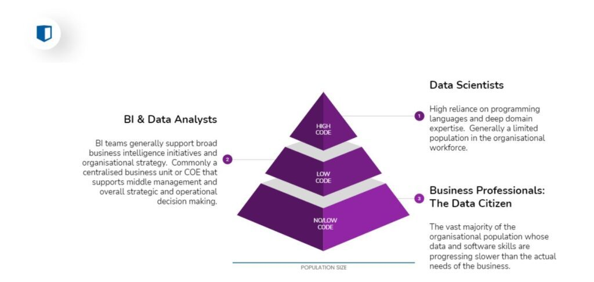
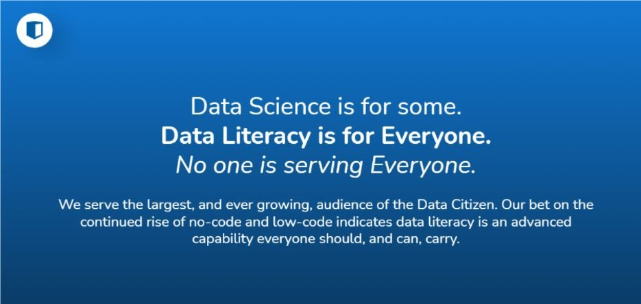

Our Mission is to Democratize Data through Data Citizens.
Kubicle profusely agrees in a world where all people can understand the language of data.
Gone are the days where it took a university degree, mass time investments on data collection, and the need to understand a programming language in order to explore a hypothesis which could be investigated with the aid of data science techniques and complex tools.
With over 175 zettabytes of data predicted to be in the global datasphere by 2025, and a material portion of it being open and public, access to data no longer requires lengthy surveys – which only large corporations can afford. Similarly, low/no code tools (like Alteryx, Power BI, Tableau, Qlik, Power Apps, etc) have made complex data tasks accessible to the non-programmer.
While there are varying levels of data awareness and competency, the most data-indifferent among us carry an innate ability to be true data advocates. Technology advancement, general data accessibility and the strategic benefits that data – used in the right ways – brings to an organisation has made data literacy a competency that everyone requires, to one degree or another.
If you can’t speak the language of data, be it as a beginner or entirely fluent, you’re going to fall behind the pace of professional development as enforced by the technological conditions around us. This applies to sales professionals, operational teams, finance professionals, management consultants…. everyone.
Enter the Data Citizen.

So… What’s a data citizen? ALMAMAT offer a nice definition:
Data citizens are software power users who can do moderate data analysis tasks. They don’t replace Data Scientists: Instead, they use software features like drag-and-drop tools, prebuilt models, and data pipelines to create models without code. Unlike data Scientists, you don’t need to recruit data citizens. That’s because they’re already part of your organization.
ALAMAT
Data Citizens have the collective power to totally transform businesses. According to the Data Literacy Index (by Qlik), enterprises with high data literacy scores carry up to 5% more enterprise value then their peers. This is an enormous competitive strength when you think that 5% can amount to an additional $300-500M for businesses around the size of a Fortune 1,000. In short, if you’re not investing in Data Literacy (in building a common competency of data awareness and understanding) you’re losing out on competitive positioning. Being data literate is no longer an option if you plan to thrive.
A common framework for businesses to gauge their level of organisational data awareness is the Data Driven Decision Making framework. In becoming a data-driven institution, a firm must navigate from a position of data denial, to data indifferent, to data aware, to data informed and then finally to data driven. While individual characteristics help define the steps an organisation takes in building the organisational-wide data competency, one thing remains constant. That is, all must take part.
Helping businesses and individuals along the path of Data Citizenship is where Kubicle comes into play. While there are multiple elearning solutions that narrow in on building Data Science capabilities, very few (in fact we believe there are none (!) bar us) focus on creating an unintimidating approach to building data competencies for the professional population that has the ability to make the greatest impact.

With Kubicle, you can be a beginner, intermediate or advanced Data Citizen and still find room for professional development. Our carefully selected curated courses and subjects, end of course exams, in-course exercises make for an unintimidating learning experience fit for all levels of the data curious.
So… In Kubicle, what are we building? We’re building Data Citizenship in over 40 countries worldwide and counting…